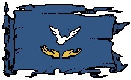

Le matriarcat d'Olizya
Histoire
En 1082 CV, les terres bordant le nord du lac d'Altalith furent envahies par des tribus de barbares venant des montagnes situées entre le Téthyr et le Bief de Vilhon. Durant des années elles assaillirent la cité sainte, mais ne parvinrent jamais à installer un siège suffisamment efficace car, bien qu'ayant perdu le contrôle sur terre, les forces du Roi-Dieu ne le perdirent jamais sur les eaux du lac. Alors que les barbares étaient installés avec toute leur famille au nord de l'actuelle Divine Écluse, les bateaux de Laelith allaient se ravitailler dans les provinces du sud et de l'est. Cette situation dura plusieurs années ; les hommes faisaient la guerre pendant que les femmes, délaissées aux campements, apprenaient à se débrouiller seules.
Ceci jusqu'au jour où une vieille femme nommée Olizya, qui avait déjà perdu son mari et ses trois fils au combat, souleva les femmes contre l'attitude belliqueuse des hommes. Elle les poussa à refuser de leur parler, arrêter de leur préparer à manger, et ne plus s'occuper du camp, jusqu'à ce qu'ils renoncent à cette vie de guerrier sans espoir et porteuse de tant de peine. Après plusieurs semaines de conflits internes, les barbares cédèrent. Olizya déposa alors les armes de son peuple face au Roi-Dieu et lui demanda seulement le droit de rester sur les terres que son peuple habitait depuis déjà plusieurs années. Le Roi-Dieu acquiesça et Olizya lui fit allégeance. Le matriarcat d'Olizya était né. Depuis ce temps-là les femmes n'ont jamais quitté le pouvoir et le matriarcat est devenu la province la plus pacifiste de tout le royaume.
Géographie
Au bord du lac, la Ponferrada marque la frontière ouest de la province avec le fief de Muick. Le nord est très montagneux et le centre couvert de petites collines. La capitale de la province est Hilminia.
Population
Le matriarcat compte de nos jours environ 85 800 âmes. Une grande communauté elfe, dirigée elle aussi par une femme, y est implantée. Ceci dit Olizya n'est pas une terre d'amazones habitée uniquement par des femmes. Ces dernières y ont le pouvoir, certes, mais elles n'habitent pas seules, des hommes vivent et travaillent dans cette province. Il est toutefois vrai que certains d'entre eux ont du mal à supporter cet état de fait, et le matriarcat est la province où l'on trouve le plus de femmes.
Villes principales. Hilminia (la capitale), Olizeÿna, Souleÿna, Milhen, Espéria, et environ 70 villages.
Population totale. 85 800 habitants (80% humains, 10% elfes, 5% halfelins).
Politique
RELATIONS
Le principal conflit du matriarcat est avec le duché d'Agramor. Machistes, ces derniers n'acceptent pas que des femmes puissent avoir le pouvoir dans une province. Les femmes d'Olizya n'ont bien évidement aucune intention de se laisser dicter leur politique par ces seigneurs, et tentent de ne pas répondre aux multiples provocations du duché.
Le matriarcat est dirigé par le Conseil des Mères qui réunit 18 femmes d'âge mûr, chacune responsable de ce qu'elles appellent un clan, qui sont en fait des sortes de guildes (clan des musiciennes, clan des bijoutières, etc). Toutefois, afin que les plus jeunes se sentent impliquées dans la vie politique et le développement d'Olizya, il existe également un second conseil, l'Assemblée des Juvéniles, qui est consulté pour toutes les décisions importantes. Ces jeunes femmes, au nombre de 36, sont elles désignées dans chaque grande ville de la province par les Mères. Bien que le conseil veille à ce que les femmes jouissent d'une bonne position dans la société (tous les postes importants de l'administration sont aux mains des femmes), celui-ci gouverne tout de même d'une manière modérée, juste et équitable. C'est assurément la province à l'administration la plus efficace.
Cultes
Le culte le plus répandu en Olizya est sans conteste celui de la déesse de la beauté, de la passion et de l'émotion, Sunie. À noter que le mariage est interdit dans la province, ceci étant considéré comme un acte dévalorisant pour l'épouse. De plus, tout homme cherchant un travail doit posséder un certificat de capacité, délivré par le clan concerné.
Économie
Le matriarcat d'Olizya est installé sur de bonnes terres, que ce soit au niveau agricol ou minier. Toutefois c'est l'artisanat qui constitue la première richesse de la province, principalement la confection et la joaillerie. En ce qui concerne le premier, la matière première, le tissu, est importée d'Azilian, ce qui fait de cette province le premier partenaire commercial du matriarcat. Olizya en fait de superbes vêtements vendus ensuite dans tout le royaume et au-delà. Au niveau de l'orfèvrerie et de la bijouterie, la province importe des métaux de la falaise de Vorn et des pierres précieuses des mines d'Egonzasthan. Là aussi, le résultat de leur travail est ensuite revendu tout autour des deux lacs.
Bien que pacifiste, le matriarcat n'est pas dépourvu d'armée, et la réputation des maîtresses d'armes d'Olizya n'est plus à faire. La province dispose d'ailleurs d'un corps de mercenaires féminin très côté, les convoyeuses, particulièrement employé par les commerçants des jardins de Jadhys pour escorter leurs caravanes ou leurs embarcations. L'honnêteté de ces femmes par rapports aux hommes est un fait démontré qui attire en effet beaucoup l'attention des négociants.
Guide du routard
L'architecture d'Hilminia. Tous les bâtiments ont été conçus par des femmes et sont... différents. À voir !
Le temple de Sunie. Situé au centre d'Hilminia, le plus beau de tout le royaume, tous dieux confondus.
Les marchés de textiles. Dans toutes les grandes villes, des vêtements de première qualité et de goût.
La manufacture d'Espéria. L'unique fabrique de la célèbre dentelle d'Olizya.
Écrit par blueace